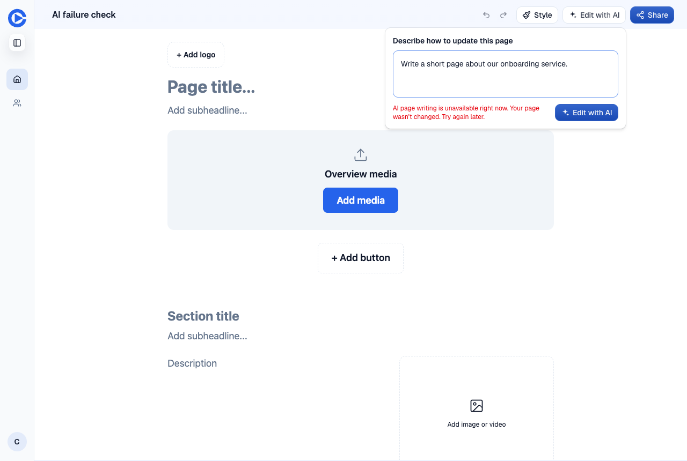

PR preview editor on a test page. Two action answers are stubbed, because OpenAI was no longer refusing when this was taken. The prompt stays in the box and the page stays at revision 1.

Before this change the same refusal showed The AI page generator failed. Try again. after about 94 seconds.